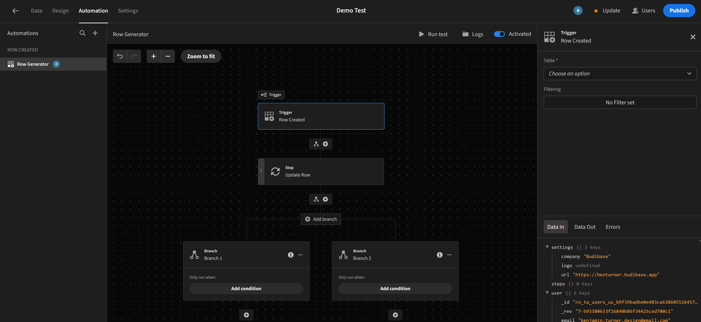

The problem
Budibase is an open-source low-code platform for internal apps like customer portals, admin panels and tools. Customers can self-host it and keep their data on their own infrastructure. As the in-house Product Designer I led the redesign of the automation builder.
The builder worked, but you could not see your data. People could not tell what data was flowing into or out of a step, or even what they had selected in the tab they were in. Debugging was guesswork, errors did not explain themselves, and complaints kept landing in the community Discord, eight to ten a month on automations alone.
Role and team
I designed and ran a paid Maze study with 25 active users and presented the findings to the CEO, CMO and Head of Engineering. I then designed the redesign and helped build it alongside the executive team and the lead developers.
Key decisions
The task in the study was blunt: go through the product and identify the most frustrating part. Data visibility and unclear errors came up repeatedly, along with a need for better debugging and testing tools. The redesign was already planned. The evidence decided what it had to fix.
Every step shows the data going in and coming out
The research kept pointing at missing data visibility. Every step needed to show what goes in and what comes out.
We considered a log, a console of sorts, and chose tabs instead. Tabs let people open the data they wanted and read it as a list, which was the most straightforward option.
A failed step explains itself
Unclear errors were the other recurring complaint. Each failed step needed its own place to say what broke, so people could fix it without guessing or asking on Discord.
Settings moved off the canvas into a sidebar
Workflow controls sat on the main canvas and crowded the flow. Moving them into a contextual sidebar left the canvas for the diagram and put the selected step’s settings in one place.
The design went through a few minor iterations before launch. The research held up, so it did not need many changes.
Shipped
| Improvement | Change | Benefit |
|---|---|---|
| Data In / Data Out | I added inline tabs to show the data flowing into and out of each step of a workflow. | People can see what a step received and returned, and trace a wrong value back to where it started. |
| Inline Error Logging | I added a dedicated tab with clear error messages for any failed step. | A failed step says what broke, so people can fix it without asking on Discord. |
| New Sidebar Panel | I moved workflow controls out of the main canvas and into a dedicated, contextual sidebar. | The canvas shows the flow; the selected step’s settings live in one place. |
| Enhanced Canvas & UI | I added zoom and pan, and made the layout more compact. | Large workflows fit on screen and stay readable. |


The result
Before launch, automations drew eight to ten complaints and feedback requests a month on the Budibase Discord. After I shipped the redesign, that dropped to zero. Clearer errors meant fewer people needed help in the first place.
Automations are what Budibase called workflows before AI agents existed, and the redesigned builder became the foundation of its next product. Budibase’s agents feature is built directly on automations. An agent can take a new email, classify it and open a Jira ticket for the right team. When a step fails, the same structure shows what went in, what came out and what broke, then lets a person confirm the next action. Budibase now positions itself as an AI workflow toolkit.
How I used AI
I used ChatGPT on the Pro plan, the only AI tool we had available at the time. We did not have Claude Code, Codex or Cursor.
Looking back
I would test the design after launch, to check customers were satisfied and to find further improvements. We assumed from the drop in complaints that we had done a good job. For a feature that ended up changing the direction of the company, I would have tested it.